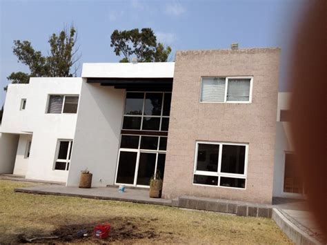
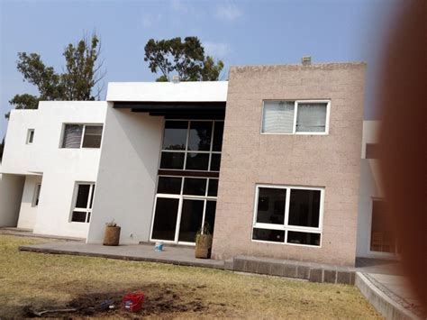

Construyendo un Futuro Sostenible: Responsabilidad Ambiental en la Industria de la Construcción
En la actualidad, la preocupación por el medio ambiente y el cambio climático ha llevado a un cambio significativo en la forma en que las empresas operan en todo el mundo. La industria de la construcción, que históricamente ha tenido un impacto considerable en el entorno natural y las emisiones de gases de efecto invernadero, no es la excepción. En este contexto, la responsabilidad ambiental se ha convertido en una parte fundamental de la ética empresarial de las empresas de construcción.
Una empresa de construcción responsable entiende que su actividad puede tener un impacto duradero en el entorno. Por lo tanto, se compromete a utilizar materiales de construcción respetables con el medio ambiente. Esto implica seleccionar cuidadosamente los materiales que se utilizan en cada proyecto, priorizando aquellos que tienen un menor impacto ambiental. Esto incluye la preferencia por materiales reciclados o reciclables, así como la elección de productos certificados que cumplen con estándares ambientales reconocidos.
Además, la empresa de construcción responsable busca reducir al máximo las emisiones de gases de efecto invernadero asociadas a sus operaciones. Esto se logra a través de prácticas como la eficiencia energética en la maquinaria y equipos de construcción, la adopción de fuentes de energía renovable siempre que sea posible, y la implementación de técnicas de construcción sostenible que reduzcan la necesidad de calefacción y refrigeración excesivas en los edificios.
La gestión responsable de residuos es otro aspecto clave de la responsabilidad ambiental en la construcción. Una empresa comprometida con el medio ambiente se asegura de que los materiales de construcción reciclables se recogen y procesan adecuadamente, reduciendo así la cantidad de residuos que terminan en vertederos y contribuyen a la contaminación ambiental.
La formación y concienciación de los empleados también son parte fundamental de la estrategia de una empresa de construcción responsable. Esto implica educar a los trabajadores sobre la importancia de las prácticas sostenibles y proporcionarles las herramientas y la capacitación necesarias para implementarlas en el lugar de trabajo.
En resumen, una empresa de construcción que abraza la responsabilidad ambiental está comprometida con un futuro más sostenible. Al utilizar materiales respetables con el medio ambiente, reducir las emisiones de gases de efecto invernadero y gestionar adecuadamente los residuos, contribuye de manera significativa a la preservación del planeta y al bienestar de las generaciones futuras. La construcción responsable no solo es un imperativo ético, sino también una inversión en un mundo mejor y más saludable.